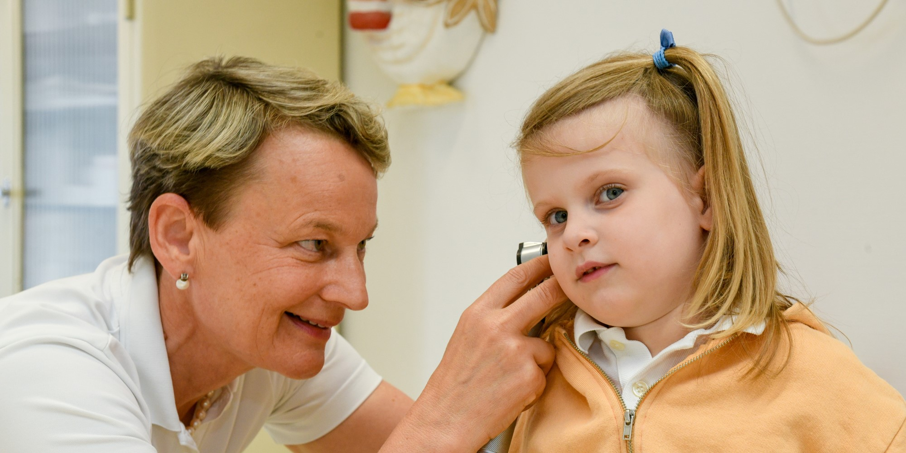
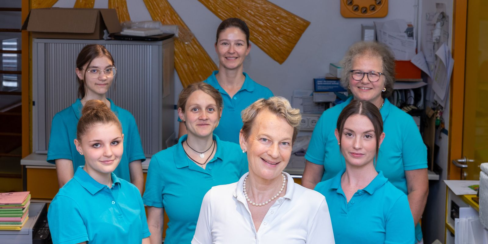

Vorsorgen & Beratung
- Sämtliche Vorsorgeuntersuchungen (U & J)
- Untersuchungen nach dem Jugendarbeitsschutzgesetz
- Entwicklungsdiagnostik, Kindergarten- & Sprachtests
- Ernährungs- & Sportberatung
In der Kinderarztpraxis Dr. med. Gabriele Lieb begleiten wir Ihr Kind von kurz nach der Geburt bis zum 18. Geburtstag – mit langjährigem Wissen, moderner Ausstattung und viel Zuwendung.

Erfahrung und langjähriges Wissen verbunden mit aktuellen Behandlungsstandards und guter technischer Ausstattung.

In freundlich und großzügig gestalteten Räumen im Herzen Würzburgs sollen sich unsere kleinen Patienten und ihre Eltern wohlfühlen. Die Praxis besteht bereits in dritter Generation – von diesem Wissen profitieren unsere Patienten.
Kommen Sie gerne in unsere freie Sprechstunde oder vereinbaren Sie telefonisch einen Termin – weitere Zeiten nach Vereinbarung.